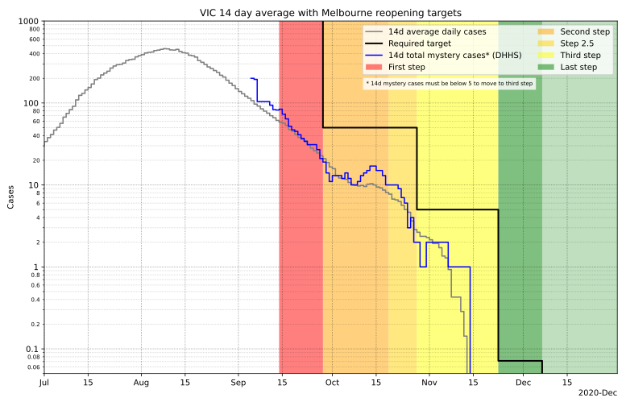

Last updated: 2020-09-27-13:23 Melbourne time
Updates daily at 9:15 AM AEST
The road to a COVID-free Victoria
←Back to per-country plots
Victoria is emerging from a fairly strict lockdown, and is aiming to have no local
spread of the virus. If they succeed, it could mean Australia will be COVID free.
How have Victoria's restrictions affected the spread of the virus? Can we expect the
virus to be eliminated in Victoria? If so, when? The below plot shows how the
effective reproduction number of the virus, Reff has changed over
time in Victoria, as well as how the daily cases have changed over time, with a
projection based on the current estimate of Reff.

Is Victoria on track to meet its targets for easing restrictions in Melbourne? The
below plot shows the 14-day average of daily cases, and the targets required to move
to each step at their earliest possible dates. The requirement to move to the last
step is zero cases for 14 days, which can't be shown on the plot. The projected
14-day average is based on the projected case numbers as in the above plot.

Disclaimer
These projections are simple extrapolations of what will happen if
Reff remains at its current value. This does not take into
account that things may change. As restrictions are lifted, the virus may have
more opportunities to spread and so Reff may increase. On the
other hand as case numbers decrease and clusters are better tracked via contact
tracing, Reff may decrease. Finally, as case numbers get low,
the random chance of how many people each infected person subsequently infects
will become more important, and calculating a state-wide average of this (the
definition of Reff) will not be particularly meaningful or
useful for prediction. As such the projections should be taken with a grain of
salt—they are merely an indication of the trend as it is right now.
Methodology
-
2020-09-23 Data source change: These plots now use DHHS-provided historically
corrected case numbers, backdated to the date the test was taken, instead of daily
net case numbers. This means that reclassifications each day now modify historical
data instead of simply subtracting from the case numbers on the date the
reclassification was done.
-
2020-09-17 methodology change: The padding of the data is now based on a two-week
fit instead of a one-week fit. This decreases the sensitivity of the latest estimate
to day-to-day noise, instead keeping it more in line with longer-term trends. The
uncertainty calculation has also changed—uncertainty in historical
Reff values was previously overestimated and is now calculated
more accurately.
-
Daily case numbers have been smoothed with 4-day Gaussian smoothing:
Nsmoothed(t) = N(t) ∗
(2πTs2)-1/2 exp(-t2 /
2Ts2)
where Ts = 4 days
and ∗ is the convolution operation.
-
Before smoothing, the daily case numbers are padded on the right with an
extrapolation based on a exponential fit to the most recent fortnight of data.
-
Reff is then calculated for each day as:
Reff(ti) = (Nsmoothed(ti) / Nsmoothed(ti-1))Tg
where Tg = 5 days is the approximate generation time of the virus.
-
The uncertainty in Reff has contributions from the uncertainty
in the above-mentioned exponential fit, as well as Poisson uncertainty in daily
case numbers, and an additional 20% uncertainty in daily case numbers - the latter
is just a crude eyeballed figure of observed day-to-day fluctuations.
-
The extrapolation of daily case numbers is based on exponential growth/decay using the most recent value of Reff and its uncertainty range:
Nextrap(ti) = Nsmoothed(ttoday) Reff(ttoday)
(ti - ttoday)/Tg
Source for case numbers: https://www.dhhs.vic.gov.au/victorian-coronavirus-covid-19-data and
covidlive.com.au
Plot/analysis by Chris Billington. Contact: chrisjbillington@gmail.com
Python script for producing the plot can be found at https://github.com/chrisjbillington/chrisjbillington.github.io/blob/master/victoria.py.